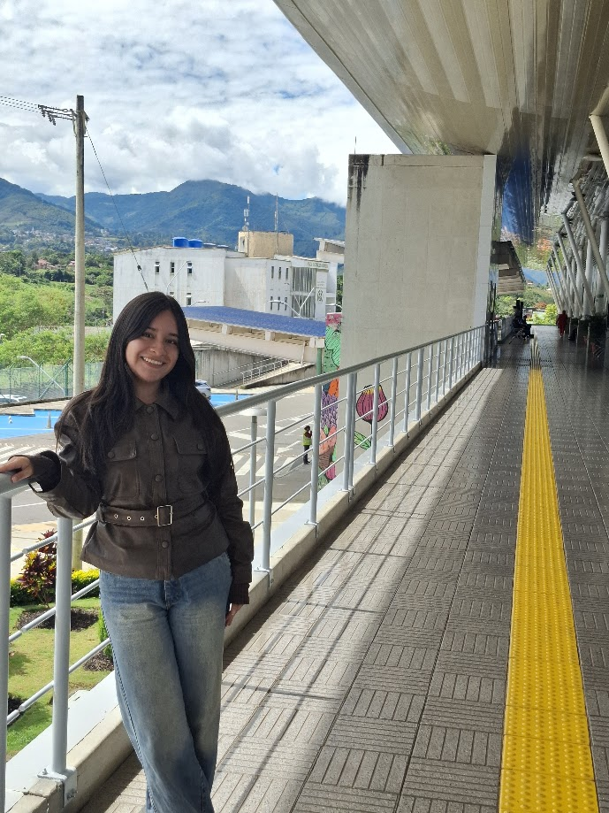

El 21 de Septiembre marca el inicio de la primavera en este lado del mundo. Pero nunca existirá un campo de flores tan grande para hacer que pierda de vista lo maravillosa que TÚ te verías entre todas esas flores.
